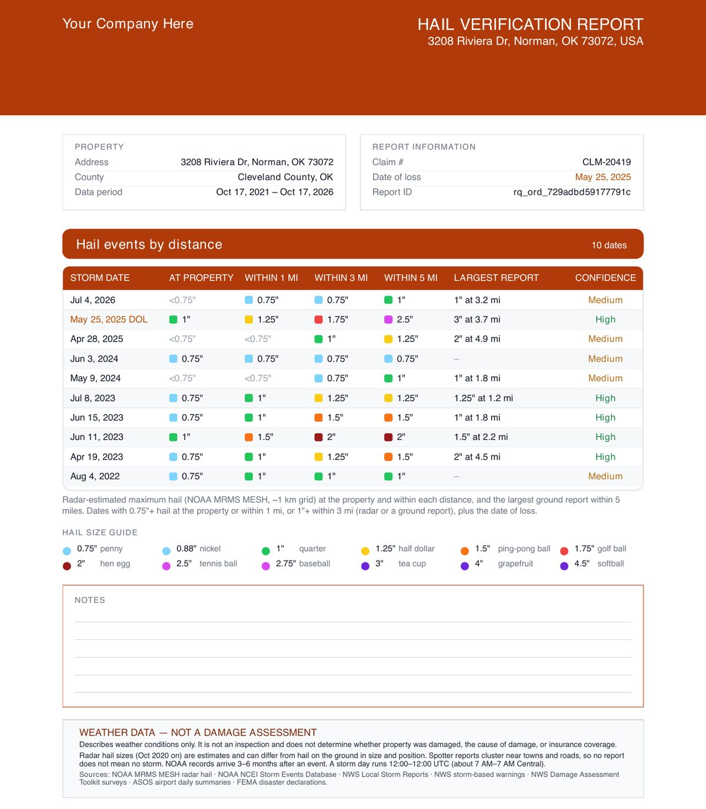
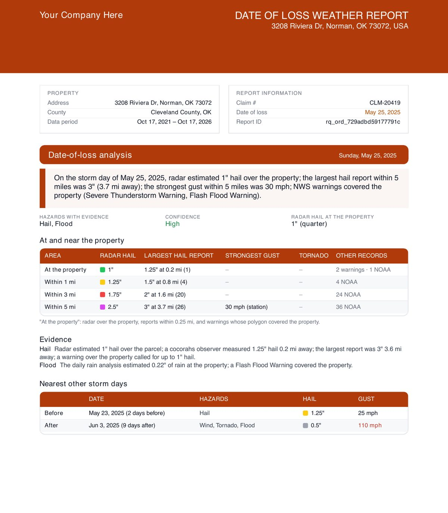
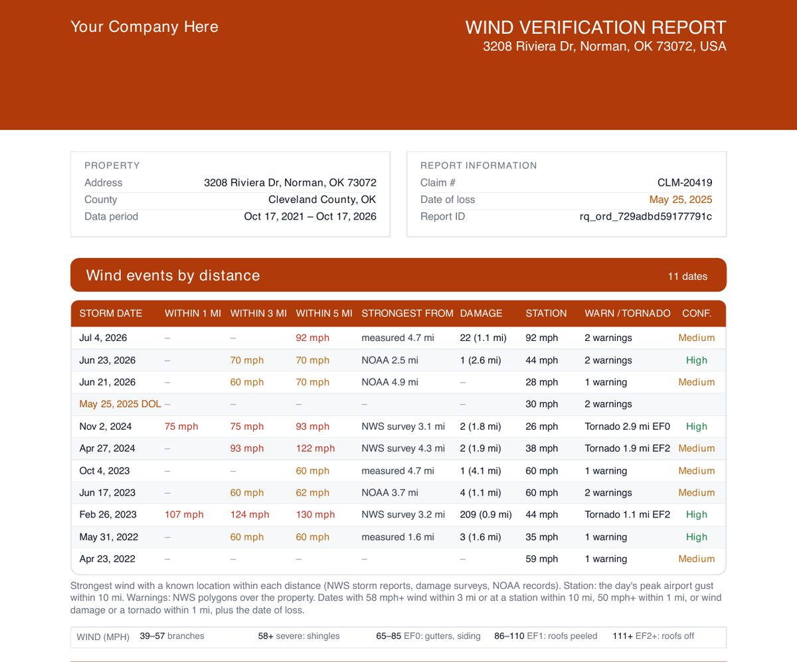

Storm Report
Hail and storm history for any address, in seconds
Five years of hail, wind and tornado history at the property and within 1, 3 and 5 miles: hail size by date, the strongest wind, the closest tornado, a damage-chance rating, and a check of your date of loss. Five PDFs, ready in seconds, for adjusters, roofers and homeowners.
- Price$5
- With a subscriptionFree
- Delivered inseconds

At a glance
- Delivered
- In seconds
- Files
- 5 PDFs: homeowner summary, hail, wind, date of loss, weather history
- Period
- The last 5 years
- Coverage
- United States and Canada
What's in the report
What you get with Storm Report
Hail verification
Every date hail fell at or near the property, by distance, with the largest report and how confident the data is.
- Hail size at the property and within 1, 3 and 5 miles
- The largest nearby report and its distance
- Confidence for every date, and your date of loss highlighted

Date of loss check
Enter a date of loss when you download, and get a page that shows what was recorded that day, by distance, on a map.
- Radar hail, ground reports, wind gusts and warnings for that day
- The nearest storm days before and after
- Add the claim number, insured name and notes to each PDF

Wind and tornado history
Severe wind and tornadoes near the property, from damage surveys, weather stations and warnings.
- Strongest wind within 1, 3 and 5 miles
- Nearby weather stations and warnings
- Tornado distance and EF rating
How it works
Order in under a minute
- Search the addressType the address and pick it from the suggestions.
- Order the Storm ReportThere's nothing to measure, so it's ready in seconds.
- Download the PDFsAdd a date of loss, claim number or notes to any of the five PDFs when you download it.
Storm Reports use public weather records from NOAA and the National Weather Service: radar-estimated hail, storm reports, damage surveys, weather stations and warnings. The damage-chance rating is based on the weather only; an inspection confirms damage.
Compare
Our reports
| Report | Delivered | Price | With a subscription |
|---|---|---|---|
| Premium Residential | In under 2 hours | $12 | $7 |
| Rapid Squares | In under 30 minutes | $8 | $5 |
| Commercial | Usually in about 8 hours | $30 | $25 |
| Storm Report | In seconds | $5 | Free |
A subscription is $100 a month or $1,000 a year, with a 30-day free trial. Start a free trial
FAQ
Storm Report questions
How do I check if hail hit my address?
Order a Storm Report for the address. It lists every date in the last five years with hail at the property or within 1, 3 and 5 miles, with the hail size and how confident the data is.
What PDFs come with a Storm Report?
Five: a plain-English Homeowner Storm Summary, Hail Verification, Wind Verification, Date of Loss, and a full Weather History.
Can I verify a date of loss?
Yes. Enter the date when you download the Date of Loss PDF and it shows what was recorded that day at the property and within 1, 3 and 5 miles, with the nearest storm days before and after.
Where does the storm data come from?
Public weather records from NOAA and the National Weather Service, including radar-estimated hail, storm reports, damage surveys, weather stations and warnings.
How much does a Storm Report cost?
A Storm Report is $5, and free with a subscription.
Which areas are covered?
The United States and Canada. Canadian reports use radar hail and weather stations, and say so on the report.
Ready to order?
Search the address, confirm the roof, and the report comes to your inbox.